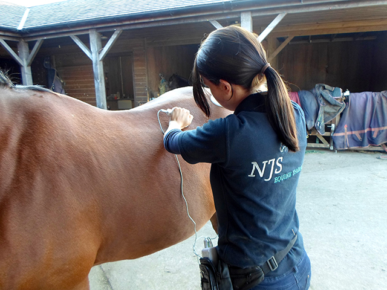

Deep Oscillation® is a gentle, non invasive form of therapy that creates an electrostatic field in the tissue, creating movement within the treated area. These oscillations have a gentle and deep-acting effect of up to 8cm in depth, and act through skin, connective tissue, subcutaneous fat, muscles, blood and lymph vessels. The movement in the tissue increases circulation to the area, and can also have a pain relieving effect by blocking pain signal transmission from the area. This makes it a useful form of therapy for wounds and tissue damage as this can help increase the rate of healing. As the therapy takes place in the tissue itself, it is very gentle and does not itself vibrate or make much noise, unlike other forms of therapy that some horse’s may find stressful.
This form of therapy has many beneficial effects, which can be applied to a wide range of equine conditions:
There are a wide range of conditions that can benefit from Deep Oscillation® Therapy. Please feel free to enquire for more details, or discuss the therapy with your vet.
This form of therapy is usually used in combination with massage for optimum results, but treatment can be tailored to the horse.
The therapy is administered through a mobile unit which I will have attached to my person. Hand held applicators are then used to transmit the electrostatic field. The oscillations can also be transmitted through a vinyl glove worn by the therapist, making it great to use in combination with massage.
A general treatment takes approximately 90 minutes. This will include a full assessment and history, a full body massage, Deep Oscillation® treatment and an after care plan. Please note that the horse may require more than one treatment to receive the full benefit; each horse is an individual and some take longer than others to reach their optimum condition.
£40 per session.
Veterinary approval/referral must be given before a treatment can be carried out according to the Veterinary Act. A referral form can be sent to you following an enquiry. Information on the unit itself can be found at www.physiopod.co.uk.